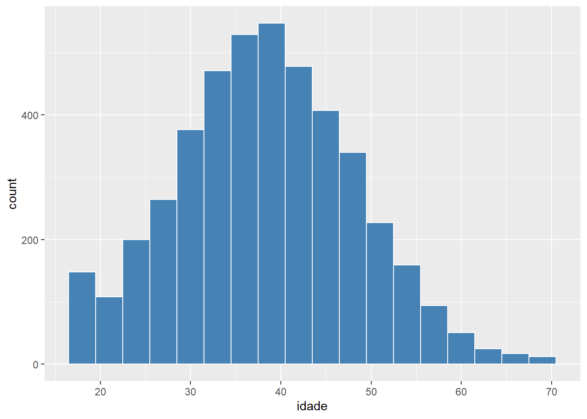
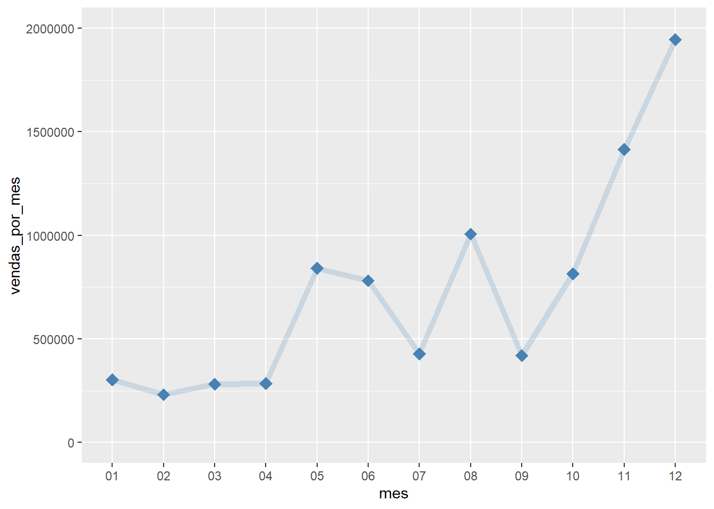

url_vendas = "dados/zoop_vendas.csv"
url_clientes = "dados/zoop_clientes.csv"R: Aplicando Data Visualization com ggplot2
Conhecendo os dados

A Zoop é uma grande varejista que atende a todas as regiões do Brasil por meio do seu e-commerce. Ela é conhecida pela ampla variedade em seus produtos buscando atender a todo tipo de público.
Para gerenciar o seu alcance, bem como o faturamento de seu setor em lojas online, ela consolida os dados em diferentes períodos de tempo e avalia esses dados para gerar insights e tomar algumas decisões estratégicas em seu negócio. Neste projeto, vamos ter acesso aos dados de parte da sua clientela do e-commerce dentro do ano de 2023.
Você, como cientista de dados júnior da empresa, precisará gerar visuais que auxiliem na construção de relatórios de acordo com algumas premissas passadas pelas partes interessadas realizando uma rápida análise do público que possuimos na loja virtual e do faturamento da empresa.
Problema de negócio:
O time de dados da Zoop precisa extrair os dados e gerar informações por meio de visuais que possam ser apresentados a diretoria da empresa apontando os dados de faturamento e traçando o perfil do cliente para auxiliar na tomada de decisão em sua loja online.
Base de dados
Vamos importar duas bases de dados:
Dados de clientes do e-commerce da Zoop, separados pelo código identificador da compra.
Dados de vendas do e-commerce da Zoop em 2023, separados pelo código identificador da compra.
Esses dados serão lidos a partir do repositório compartilhado pelo GitHub.
Desafio
Você, como um(a) cientista de dados júnior, passará por um treinamento a fim de testar seus conhecimentos de análise de dados para entrar no time de dados da Zoop. O seu desafio é extrair os dados da base de clientes e vendas da empresa e construir visuais que possam agregar valor à apresentação dos resultados da Zoop em 2023. Para isso, serão repassados algunsquestionamentos que foram separados para que você possa contribuir na construção do storytelling das vendas da empresa.
Como grande parte dos analistas do time de dados utilizam a linguagem R, você precisará realizar o processo da análise exploratória dos dados (AED) e a criação dos visuais utilizando essa linguagem.
Importando os pacotes do projeto
Obtendo os dados
Para iniciarmos o nosso processo de exploração dos dados, vamos inicialmente passar o caminho das duas bases que utilizaremos em nosso projeto:
Após esta etapa, vamos criar 2 tabelas com os dados dos clientes e das vendas da Zoop separadamente e dar uma pequena checada nas tabelas extraídas. Para isso utilizaremos a função read_csv do readr que gera um tibble que analisa os dados e supõe os seus tipos pelos registros lidos. Usaremos show_col_types = FALSE para trazer apenas a tabela para as variáveis vendase clientes.
Para a tabela de vendas vamos ler os primeiros dados, observando as colunas e os registros utilizando a função head().
vendas <- read_csv(url_vendas, show_col_types = FALSE)
head(vendas)# A tibble: 6 × 8
ID_compra data horario categoria preco_unitario quantidade frete
<dbl> <date> <time> <chr> <dbl> <dbl> <dbl>
1 6 2023-01-03 20:40 Tecnologia 899. 4 713.
2 5 2023-01-03 21:48 Casa/Móveis 116. 1 0
3 9 2023-01-03 17:08 Beleza/Saúde 68.9 2 13.8
4 4 2023-01-03 14:29 Casa/Móveis 80.9 5 40.4
5 8 2023-01-03 18:02 Beleza/Saúde 165 4 0
6 2 2023-01-03 18:42 Tecnologia 2028. 5 1724.
# ℹ 1 more variable: metodo_pagamento <chr>Já para a tabela de clientes vamos usar o glimpse() que mostra um resumo da estrutura dos dados (colunas e seus tipos)
clientes <- read_csv(url_clientes, show_col_types = FALSE)
glimpse(clientes)Rows: 6,169
Columns: 9
$ ID_compra <dbl> 904, 4613, 5579, 2405, 2485, 756, 3020, 2390, 3957, 5…
$ ID_cliente <dbl> 8972, 5120, 1847, 2846, 2715, 9555, 3793, 4903, 3413,…
$ cidade <chr> "Natal", "São Paulo", "São Paulo", "São Paulo", "Salv…
$ uf <chr> "Rio Grande do Norte", "São Paulo", "São Paulo", "São…
$ regiao <chr> "Nordeste", "Sudeste", "Sudeste", "Sudeste", "Nordest…
$ idade <dbl> 49, 49, 24, 38, 30, 46, 32, 26, 30, 28, 25, 31, 40, 4…
$ sexo_biologico <chr> "Masculino", "Feminino", "Feminino", "Feminino", "Fem…
$ cashback <chr> "Não", "Não", "Não", "Sim", "Não", "Não", "Sim", "Não…
$ avaliacao_compra <dbl> 9, 9, 8, 7, 10, 7, 9, 9, 10, 8, 7, 10, 9, 8, 8, 7, 10…Já estamos com as bases que vamos utilizar. Mas quais são as perguntas levantadas para respondermos com a análise destes dados?
Questionamentos
Vendas
- Qual foi o faturamento por categoria em 2023?
- Qual foi o desempenho das vendas ao longo dos meses em 2023?
- Como esta dividida a venda por trimestre por método de pagamento? O método PIX tem tido boa adesão?
Perfil do cliente
- Como está distribuído o nosso público por idade? Existe um grupo que sobressai relacionado a região e ao sexo biológico?
- Dos clientes que participam do nosso programa de cashback, qual a proporção por região do país? Quais são as 3 principais regiões? Precisamos reforçar a campanha de adesão em quais delas?
Agora que possuímos a base de dados e as perguntas que precisamos responder, vamos explorar um pouco cada uma das bases para verificar se está tudo certo para começarmos a análise dos dados?
Tratando os dados
Agora, vamos fazer uma breve exploração dos dados para compreender um pouco sobre eles. Lembrando que os dados das bases de vendas e clientes já estão limpos (sem dados faltantes ou nulos), restando apenas verificar se os tipos estão corretos ou se podemos adicionar mais informações.
Tabela das vendas
Começando pela base de vendas, vamos entender os dados que possuímos:
vendas# A tibble: 6,169 × 8
ID_compra data horario categoria preco_unitario quantidade frete
<dbl> <date> <time> <chr> <dbl> <dbl> <dbl>
1 6 2023-01-03 20:40 Tecnologia 899. 4 7.13e2
2 5 2023-01-03 21:48 Casa/Móveis 116. 1 0
3 9 2023-01-03 17:08 Beleza/Saúde 68.9 2 1.38e1
4 4 2023-01-03 14:29 Casa/Móveis 80.9 5 4.05e1
5 8 2023-01-03 18:02 Beleza/Saúde 165 4 0
6 2 2023-01-03 18:42 Tecnologia 2028. 5 1.72e3
7 3 2023-01-03 23:47 Supermercado 84.9 5 0
8 1 2023-01-03 00:13 Eletrodoméstic… 2170. 1 1.39e2
9 7 2023-01-03 17:40 Livros 75.9 5 1.90e1
10 11 2023-01-04 21:50 Casa/Móveis 13.9 5 3.48e0
# ℹ 6,159 more rows
# ℹ 1 more variable: metodo_pagamento <chr>Como podemos observar, o tibble gerado foi bem assertivo, acertando os dados numéricos, categóricos e de data. Temos mais de 6000 registros de venda e as características das vendas como hora e dia da compra, categoria do produto, preço, método de pagamento entre outros
Porém, como vamos utilizar esses dados para a construção de visuais, uma boa prática é transformar dados categóricos que se repetem (categoria e método de pagamento) em factor. Faremos essa alteração da seguinte forma:
vendas <- vendas %>%
mutate_if(is.character, as.factor)
vendas# A tibble: 6,169 × 8
ID_compra data horario categoria preco_unitario quantidade frete
<dbl> <date> <time> <fct> <dbl> <dbl> <dbl>
1 6 2023-01-03 20:40 Tecnologia 899. 4 7.13e2
2 5 2023-01-03 21:48 Casa/Móveis 116. 1 0
3 9 2023-01-03 17:08 Beleza/Saúde 68.9 2 1.38e1
4 4 2023-01-03 14:29 Casa/Móveis 80.9 5 4.05e1
5 8 2023-01-03 18:02 Beleza/Saúde 165 4 0
6 2 2023-01-03 18:42 Tecnologia 2028. 5 1.72e3
7 3 2023-01-03 23:47 Supermercado 84.9 5 0
8 1 2023-01-03 00:13 Eletrodoméstic… 2170. 1 1.39e2
9 7 2023-01-03 17:40 Livros 75.9 5 1.90e1
10 11 2023-01-04 21:50 Casa/Móveis 13.9 5 3.48e0
# ℹ 6,159 more rows
# ℹ 1 more variable: metodo_pagamento <fct>Legal! Já ajustamos nosso dados categóricos. Agora, que tal criarmos uma variável que já traga o valor total da compra?
vendas <- vendas %>%
mutate(total = preco_unitario * quantidade + frete)Tabela dos clientes
Vamos agora para a base de clientes observar também os dados que possuímos:
clientes# A tibble: 6,169 × 9
ID_compra ID_cliente cidade uf regiao idade sexo_biologico cashback
<dbl> <dbl> <chr> <chr> <chr> <dbl> <chr> <chr>
1 904 8972 Natal Rio Gr… Norde… 49 Masculino Não
2 4613 5120 São Paulo São Pa… Sudes… 49 Feminino Não
3 5579 1847 São Paulo São Pa… Sudes… 24 Feminino Não
4 2405 2846 São Paulo São Pa… Sudes… 38 Feminino Sim
5 2485 2715 Salvador Bahia Norde… 30 Feminino Não
6 756 9555 João Pessoa Paraíba Norde… 46 Feminino Não
7 3020 3793 Brasília Distri… Centr… 32 Masculino Sim
8 2390 4903 São Paulo São Pa… Sudes… 26 Masculino Não
9 3957 3413 Salvador Bahia Norde… 30 Feminino Não
10 5142 3556 Salvador Bahia Norde… 28 Feminino Não
# ℹ 6,159 more rows
# ℹ 1 more variable: avaliacao_compra <dbl>Aqui, vamos fazer apenas aquele mesmo processo do factor. Podemos utilizar o mesmo código modificando apenas para a base clientes
clientes <- clientes %>%
mutate_if(is.character, as.factor)
head(clientes)# A tibble: 6 × 9
ID_compra ID_cliente cidade uf regiao idade sexo_biologico cashback
<dbl> <dbl> <fct> <fct> <fct> <dbl> <fct> <fct>
1 904 8972 Natal Rio Gra… Norde… 49 Masculino Não
2 4613 5120 São Paulo São Pau… Sudes… 49 Feminino Não
3 5579 1847 São Paulo São Pau… Sudes… 24 Feminino Não
4 2405 2846 São Paulo São Pau… Sudes… 38 Feminino Sim
5 2485 2715 Salvador Bahia Norde… 30 Feminino Não
6 756 9555 João Pessoa Paraíba Norde… 46 Feminino Não
# ℹ 1 more variable: avaliacao_compra <dbl>Já exploramos um pouco das duas bases do projeto e ajustamos os dados para facilitar o nosso processo de criação dos gráficos. Vamos começar a colocar a mão na massa e construir o nosso primeiro visual?
Construindo nosso primeiro visual
O pacote ggplot2 trabalha com a criação de visualização de dados em camadas. Ou seja, para construir um gráfico, nós precisamos montá-los aos poucos adicionando os recursos camada por camada. Ao todo, o ggplot2 possui uma série de elementos gramaticais que constituem as camadas e recursos de um visual:
| Elemento | Descrição |
|---|---|
| data | Os dados que serão utilizados para a construção do visual |
| aesthetics | A dimensão visual dos dados (coordenadas e elementos estéticos) |
| geometries | Os elementos visuais utilizados a partir dos dados |
| statistics | Representação dos dados para facilitar a compreensão |
| coordinates | O espaço em que o visual será construído |
| themes | Os recursos externos aos dados para refinar o visual |
| facets | Plotagem de dados em pequenos múltiplos (segregação de dados) |
Vamos explorar esses elementos gramaticais ao longo do nosso processo de construção do visual. Porém, para a construção do nosso 1º visual focaremos nos três principais elementos: data, aes e geom
Vamos observar como é esse processo de construção de um visual?
Primeiro, vamos utilizar a base de vendas e construir um visual que apresente o Faturamento de vendas por categoria da Zoop em 2023.
Passos para a criação de uma visualização
1. Desenhar a camada base.
Esta é área que utilizaremos para o visual e seus elementos. É bastante comum chamarmos os dados que vamos utilizar nesta camada.
ggplot(vendas)
2. Escolher a estética do gráfico (dimensão visual)
Aqui definimos as coordenadas e outros elementos estéticos do visual, baseados nos valores da base de dados.
ggplot(vendas, aes(x = categoria, y = total))3. Definir o elemento geométrico (tipo do visual)
Nesta etapa, escolhemos o tipo de gráfico que queremos construir e também quais elementos que gostaríamos de adicionar na área da figura.
ggplot(vendas, aes(x = categoria, y = total)) +
geom_col()Conseguimos observar acima, a construção de um exemplo de visual (gráfico de colunas) utilizando os 3 elementos básicos da construção de um gráfico com ggplot2. Logo abaixo, temos um exemplo de sintaxe que pode ser aplicado a uma série de visuais passando os dados, suas coordenadas e tipo de visual
Sintaxe básica na criação de um gráfico:
ggplot(data = dados, aes(x = Var_1, y = Var_2)) + geom_tipo_grafico( )
Agora que aprendemos a construir o nosso primeiro visual, que tal começarmos a análise dos dados dos clientes e vendas para respondermos aos questionamentos que recebemos? Vamos aprender a construir muitos mais visuais e com diferentes funcionalidades e aparências.
Explorando dados dos clientes
Vamos começar analisando os dados dos clientes. Aqui, vamos optar por uma análise exploratória, sem muitas estilizações e ajustes nos gráficos que nos ajudaram a analisar e levantar hipóteses sobre o perfil dos clientes. O foco será trazer em texto os insights que teremos com os visuais.
Distribuindo dados de uma única variável
A nossa base de dados de clientes é definida pelo ID da compra. Ou seja, 1 ou mais clientes podem realizar mais de uma compra. Então, para verificar isso, vamos contar a quantidade clientes únicos que possuímos.
clientes %>% count(ID_cliente, sort = T)# A tibble: 4,453 × 2
ID_cliente n
<dbl> <int>
1 5267 7
2 4421 6
3 5145 6
4 9864 6
5 1442 5
6 6698 5
7 9363 5
8 1025 4
9 1172 4
10 1530 4
# ℹ 4,443 more rowsFoi possível notar que na verdade temos 4453 clientes únicos em nossa base. Portanto, vamos criar uma nova tabela que salva os dados de cada um deles unicamente, para que possamos utilizar em nossos visuais.
clientes_unicos <- clientes %>% distinct(ID_cliente, .keep_all = T)
clientes_unicos# A tibble: 4,453 × 9
ID_compra ID_cliente cidade uf regiao idade sexo_biologico cashback
<dbl> <dbl> <fct> <fct> <fct> <dbl> <fct> <fct>
1 904 8972 Natal Rio Gr… Norde… 49 Masculino Não
2 4613 5120 São Paulo São Pa… Sudes… 49 Feminino Não
3 5579 1847 São Paulo São Pa… Sudes… 24 Feminino Não
4 2405 2846 São Paulo São Pa… Sudes… 38 Feminino Sim
5 2485 2715 Salvador Bahia Norde… 30 Feminino Não
6 756 9555 João Pessoa Paraíba Norde… 46 Feminino Não
7 3020 3793 Brasília Distri… Centr… 32 Masculino Sim
8 2390 4903 São Paulo São Pa… Sudes… 26 Masculino Não
9 3957 3413 Salvador Bahia Norde… 30 Feminino Não
10 5142 3556 Salvador Bahia Norde… 28 Feminino Não
# ℹ 4,443 more rows
# ℹ 1 more variable: avaliacao_compra <dbl>Pronto! Agora temos a tabela com os clientes únicos e podemos partir para responder os questionamentos pertinentes ao perfil dos clientes. Vamos começar pelo seguinte caso:
Como está distribuído o nosso público por idade?
Para respondermos essa pergunta, vamos recorrer a um visual muito utilizado para distribuição de dados de uma única variável: Histograma
ggplot(clientes_unicos, aes(idade)) +
geom_histogram(binwidth = 3)Conseguimos notar, por exemplo, que a escolha dos intervalos (bins) ou largura do intervalo (binwidth) pode influenciar na observação dos dados. Por isso é muito importante ter isso em mente ao construir o gráfico.
Podemos observar que grande parte da clientela está disposta entre 30 a 50 anos, com um número interessante também na faixa abaixo de 20 anos.
Podemos estilizar o Histograma também para representar, por exemplo, os resultados com outras cores. Para isso temos 2 argumentos que podemos utilizar no elemento geométrico: color e fill
ggplot(clientes_unicos, aes(idade)) +
geom_histogram(binwidth = 3, fill = "steelblue", color = "white")
Ficou bem interessante o nosso visual, certo? Sinta-se livre para interpretar e colocar seus achados neste visual em relação ao perfil dos clientes.
Distribuindo dados por categoria
Vamos evoluir um pouco mais na distribuição de dados. Fizemos por idade, mas agora vamos querer combinar com mais outras variáveis (região e sexo biológico) a fim de responder um de nossos questionamentos.
Para isso, vamos precisar sair de um simples histograma para outro visual que também atende a distribuição de dados resumindo-o por meio de suas medidas estatísticas. Estamos falando do boxplot.
O boxplot é uma representação visual que mostra a distribuição de dados quantitativos, facilitando comparações entre variáveis ou categorias.
Os elementos principais de um boxplot são:
Caixa: Representa o intervalo interquartil (IIQ), que vai do 1º quartil (Q1 - 25% dos dados) ao 3º quartil (Q3 - 75% dos dados).
Linha mediana: Onde está posicionado a mediana (Q2), valor que separa 50% dos dados.
Whiskers (“bigodes”): mostram a variabilidade fora do intervalo interquartil
Outliers: Pontos individuais que estão fora do alcance dos whiskers, indicados separadamente.
Visto a estrutura de um boxplot, vamos partir para investigação de mais uma característica de nossos clientes:
Como está distribuído o nosso público por idade e região?
Para respondermos essa pergunta, vamos construir um Boxplot
ggplot(clientes_unicos) +
geom_boxplot(aes(y = regiao, x = idade))Conseguimos gerar alguns insights aqui neste visual. Podemos, por exemplo, notar uma distribuição de público mais jovem na Região Centro-Oeste.
Uma outra curiosidade é a inserção de uma variável para segregação/divisão de dados, o argumento fill , desta vez dentro da camada aes.
ggplot(clientes_unicos) +
geom_boxplot(aes(y = regiao, x = idade, fill = regiao))Não observamos nenhuma diferença a não ser na cor de cada boxplot e a legenda ao lado. Isto porque utilizamos a mesma variável para o eixo y e o fill. Para auxiliar na resposta ao questionamento, que tal adicionarmos no fill a variável sexo_biologico?
ggplot(clientes_unicos) +
geom_boxplot(aes(y = regiao, x = idade, fill = sexo_biologico))Bem diferente, não é mesmo? Podemos ter alguns insights interessantes aqui. Por exemplo, lembra que citamos o Centro-Oeste com uma distribuição de público mais jovem? Então, com essa divisão pelo sexo ficou mais evidente a influência do resultado pela distribuição do público do sexo masculino na região.
Tenha bastante cuidado nos recursos que adiciona o gráfico que possam deixá-lo de mais difícil interpretação. Esse gráfico mesmo não seria ideal para o público geral, tanto pela complexidade de um boxplot, quanto a quantidade de variáveis a se analisar.
Compondo dados
Vamos partir para outro tipo de visual para responder a mais um questionamento
Dos clientes que participam do nosso programa de cashback, qual a proporção por região do país?
Para responder essa pergunta podemos construir uma série de visuais. Vamos optar por um que é bem comum e que já criamos aqui neste documento: Gráfico de colunas.
A diferença é que precisaremos filtrar os dados trazendo apenas os clientes que participam do programa de cashback. E, além disso, representar os dados como proporção (percentual). Mas vamos começar contando quantos clientes usam esse serviço
clientes_unicos %>% filter(cashback == "Sim") %>%
ggplot(aes(x=regiao)) +
geom_bar()Já trouxemos em valores absolutos a quantidade de clientes que usam o serviço de cashback. Agora vamos ajustar o gráfico para trazer em dados percentuais. Para isso utilizaremos na estética do geom_bar um cálculo estatístico que conta cada quantidade de clientes e divide pelo total. Usaremos a palavra reservada countpara nos auxiliar.
clientes_unicos %>% filter(cashback == "Sim") %>%
ggplot(aes(x=regiao)) +
geom_bar(aes(y = after_stat(100 * count/sum(count)))) +
labs(y = "Porcentagem")Agora conseguimos representar os dados em escala percentual utilizando o after_stat(). Foi possível notar que as 3 principais regiões em nº de clientes são as regiões Sudeste, Nordeste e Sul. E, que tanto o Centro-Oeste, quanto o Norte possuem menos de 10% de representatividade nacional no programa de cashback.
Explorando dados das vendas
Agora, vamos analisar os dados do histórico de vendas em 2023. Nesta parte, vamos focar em construir os visuais que serão refinados posteriormente para serem utilizados em relatórios ou apresentações as parte interessadas.
Comparando dados e ajustando eixos
Para começar, vamos voltar aquele 1º gráfico que criamos no início do projeto. Os dados não estão organizados. Uma boa prática é ordená-los de acordo com o total de vendas.
Relembrando, o questionamento é o seguinte:
Qual foi o faturamento por categoria em 2023?
Vamos fazer uma pequena modificação do nosso visual, alterando a ordem das categorias de acordo com os valores de venda.
Obs: Por padrão, a função
reorder()ordena pela mediana dos dados.
g <- ggplot(vendas, aes(x = reorder(categoria, -total, FUN = sum), y = total)) +
geom_col()
gApós ordenar os dados, o gráfico ficou bem mais interessante, dando essa sensação de progressão. As vendas com Tecnologia e Eletrodomésticos é bem maior que as outras categorias.
Pensando em adicionar os valores por fora das colunas e tirando aquele espaço abaixo das barras dando uma sensação ques estão “flutuando”, vamos ajustar os limites do gráfico. Para isso utilizaremos as funções de escala do visual, no nosso caso, scale_y_continuous()
g <- g + scale_y_continuous(expand = c(0,0), limits = c(0, 5.2e6))
gOs nomes das categorias são relativamente curtos, mas e se adicionarmos mais categorias? E se os nomes fossem maiores?
Para evitar essas situações podemos modificar a orientação do gráfico de coluna para barra. Uma forma simples de fazer isso em R, sem precisar mudar os valores de x e y, é por meio da função coord_flip()
g <- g + coord_flip()
gBem melhor para ler o nome das categorias, não é mesmo? A ordenação permaneceu e um ponto de atenção está em perceber que as alterações posteriores à função são invertidas, quando mexer em x as alterações serão no eixo vertical, e em y serão no eixo horizontal.
Representando dados temporais
Continuando o nosso processo de construção de visuais, vamos explorar agora gráficos que representam dados temporais. Esse visual vai nos ajudar a responder o seguinte questionamento
Qual foi o desempenho das vendas ao longo dos meses em 2023?
Lembra que nossos dados são por compra e que a representação da data é diária? Então, vamos precisar ler de alguma forma os meses de cada compra e agregar esse dado por mês. Vamos começar então gerando a coluna mes que extrai esses dados
vendas <- vendas %>%
mutate(mes = format(data, "%m"))Com a coluna dos meses criada, vamos construir um gráfico adequado para dados temporais com um número razoável de períodos: Gráfico de Linha
ggplot(vendas, aes(x = mes, y = total)) +
geom_line()Opa! Tem algo estranho no nosso gráfico. Isso porque ele está tentando ligar os pontos de todas as vendas em cada mês gerando diferentes linhas verticais que, é bem verdade, não nos informa nada!
Precisamos agrupar as vendas mês a mês, somando os valores de cada mês.
vendas_por_mes <- vendas %>%
group_by(mes) %>%
summarise(vendas_por_mes = sum(total))
vendas_por_mes# A tibble: 12 × 2
mes vendas_por_mes
<chr> <dbl>
1 01 303681.
2 02 231224.
3 03 281818.
4 04 286374.
5 05 841254.
6 06 781481.
7 07 427311.
8 08 1006685.
9 09 419898.
10 10 814186.
11 11 1414809.
12 12 1945770.Agora sim! Com os dados dos meses agrupados vamos partir para nosso gráfico de linha. Para que possamos ligar os pontos, levando em conta que a variável x é temporal e/ou categórica, precisamos adicionar o código group=1 em aes, para que entenda que todos os dados pertencem ao mesmo grupo.
Outro ponto de atenção também está nos ajustes do eixo y, evitando más interpretações do dado. É importante partir do 0!
ggplot(vendas_por_mes, aes(x = mes, y = vendas_por_mes, group = 1)) +
geom_line() +
ylim(0,2e6)Nosso gráfico finalmente saiu do papel! Podemos notar comportamentos interessantes como, por exemplo, um salto de vendas no último tri.
O gráfico está bem simples. Que tal a gente modificar um pouco a nossa linha? Adicionar uma cor, ajustar tamanho, etc.
ggplot(vendas_por_mes, aes(x = mes, y = vendas_por_mes, group=1)) +
geom_line(linewidth = 2, color = "steelblue", alpha = 0.5) +
ylim(0,2e6)Parece interessante! Mas que tal a gente dar um foco nos pontos desse gráfico. Para isso vamos precisar adicionar um novo geom aqui. Vamos aprender como fazer?
Combinando visuais
Já construímos o gráfico de linha do desempenho das vendas ao longo de 2023. Agora, faz bastante sentido a gente evidenciar os pontos que combinam os meses e os valores. Isso nos dá uma noção de onde estamos e para onde fomos.
Para isso, basta a gente adicionar um geom_point junto ao nosso visual que construímos.
Atenção: A ordem dos “geoms” importa. Ou seja, cuidado a combiná-los evitando sobreposições.
Vamos adicionar alguns recursos visuais em nosso geom_point como tamanho, cor, forma, etc.
ggplot(vendas_por_mes, aes(x = mes, y = vendas_por_mes, group=1)) +
geom_line(linewidth = 2, color = "steelblue", alpha = 0.2) +
geom_point(size = 4, color = "steelblue", shape = "diamond") +
ylim(0,2e6)
Legal! Nosso visual está ficando muito bom. Vamos mexer mais nele mais para frente, quando estivermos na etapa de personalização dos visuais.
Agrupando e empilhando dados
Aprendemos a representar dados categóricos, numéricos e temporais. Mas e a combinação destes? É isso que faremos aqui ao responder mais um questionamento:
Como está dividida a venda por trimestre por método de pagamento? O método PIX tem tido boa adesão?
Como você pode notar, temos 3 variáveis a considerar aqui: o tempo (em trimestre), o valor das vendas e o método de pagamento.
Podemos começar tratando a variável temporal. Como não temos os dados do trimestre, vamos criar uma nova coluna com esse dado, utilizando o pacote lubridate para extrair os trimestres pela data da compra e já transformado para factor para facilitar na hora de construir o gráfico.
vendas <- vendas %>%
mutate(trimestre = as.factor(quarter(data)))Após a criação da coluna, vamos agrupar os dados pelo trimestre e método de pagamento, somando as vendas.
vendas_por_tri <- vendas %>%
group_by(trimestre, metodo_pagamento) %>%
summarize(total_tri = sum(total))
vendas_por_tri# A tibble: 12 × 3
# Groups: trimestre [4]
trimestre metodo_pagamento total_tri
<fct> <fct> <dbl>
1 1 Boleto 176995.
2 1 Crédito 287167.
3 1 PIX 352561.
4 2 Boleto 344944.
5 2 Crédito 874828.
6 2 PIX 689336.
7 3 Boleto 245148.
8 3 Crédito 941988.
9 3 PIX 666757.
10 4 Boleto 722404.
11 4 Crédito 1937027.
12 4 PIX 1515335.Agora, vamos construir o gráfico para representar a combinação dessas informações. Para responder o nosso questionamento podemos utilizar um Gráfico de Colunas Empilhadas ou Agrupadas. Vamos ver a diferença entre elas? Para segregar os dados pelo método de pagamento vamos recorrer ao elemento fill do aes.
ggplot(vendas_por_tri, aes(trimestre, total_tri, fill = metodo_pagamento)) +
geom_col(position = "dodge")
Conseguimos notar a diferença entre colunas empilhadas e agrupadas:
Colunas empilhadas: representa a composição dos dados de cada coluna e favorece a comparação entre colunas (dados absolutos)
Colunas agrupadas: representa a composição dos dados como um grupo de colunas e favorece a comparação em cada coluna
Criamos o nosso visual, mas podemos fazer algumas estilizações que melhore a percepção dos dados. A escolha de cores é um fator importante. Muitas vezes elas determinam o que aquele dado representa e, do modo que está o nosso, a combinação de cores vermelhas, verdes e azuis não faz muito sentido.
Por isso, podemos fazer uso das paletas de cores no R para, por exemplo, demonstrar que os dados tem certa relação. Vamos então, primeiro, usar uma paleta pré-definida a Blues chamando-a por meio do scale_fill_brewer() .
ggplot(vendas_por_tri, aes(trimestre, total_tri, fill = metodo_pagamento)) +
geom_col(position = "dodge") +
scale_fill_brewer(palette = "Blues")Ficou bem melhor, né? Agora os dados dão uma sensação de pertencimento ao mesmo grupo. Mas, nós podemos também definir as cores do nosso visual manualmente. Essa 1ª cor azul por exemplo está muito clara para o fundo do gráfico. Vamos criar um vetor com as cores que desejamos:
cores <- c("lightskyblue1","steelblue","dodgerblue4")Depois de definir o vetor das cores vamos mudar a função da definição de cores para scale_fill_manual() .
ggplot(vendas_por_tri, aes(trimestre, total_tri, fill = metodo_pagamento)) +
geom_col(position = "dodge") +
scale_fill_manual(values = cores)Deu outra cara para o nosso visual! Temos um gráfico muito bem feito e que ilustra a resposta àquela pergunta com mais propriedade. Por exemplo, tivemos um aumento das vendas por PIX ao longo dos trimestres, embora apenas no 1º Tri eles foram em maioria em relação às compras por Cartão de Crédito.
Personalizando os visuais
Agora temos os 3 visuais que nos auxiliarão na análise explanatória das vendas da Zoop em 2023. Relembrando o que fizemos até o momento, utilizamos os gráficos inicialmente como ferramentas para a análise exploratória dos clientes da Zoop gerando bons insights. Depois, começamos a construção dos visuais que serão utilizados para a apresentação ao público mais gerencial, ou seja, precisamos informar de maneira breve e clara o que aquele gráfico apresenta.
Para isso, vamos começar com uma parte bem importante para a construção de visuais informativos: definição da identidade visual dos gráficos e elementos.
Definindo o tema dos visuais
Primeiro passamos a paleta de cores da Zoop para que possamos alterar os visuais ao longo do processo
Paleta de cores da Zoop
| red_1 | red_2 | red_3 | grey_1 | grey_2 | grey_3 | blue_1 | blue_2 | blue_3 |
|---|---|---|---|---|---|---|---|---|
| #ee8399 | #e23155 | #881d33 | #f3f3f3 | #ebebeb | #8d8d8d | #a3adbd | #5e708c | #19325b |
 |
 |
 |
 |
 |
 |
O código abaixo salva os valores hexadecimais das cores em cada variável com o código da cor
nomes <- c("red_1", "red_2", "red_3", "grey_1", "grey_2",
"grey_3", "blue_1", "blue_2", "blue_3")
cores <- c("#ee8399", "#e23155", "#881d33", "#f3f3f3", "#ebebeb",
"#8d8d8d", "#a3adbd", "#5e708c", "#19325b")
for (i in seq(nomes)) assign(nomes[i],cores[i])Agora que sabemos as cores dos visuais, vamos atualizar os visuais com as cores que se encaixam na identidade visual da Zoop
Temas
Vamos observar como podemos utilizar os temas em nosso projeto com ggplot2. Para isso, iniciaremos trazendo o nosso visual do gráfico de vendas por mês para observar o que acontece.
A única atualização em relação ao código que fizemos foi a inserção de uma das cores que estão na paleta da Zoop nos parâmetros color dos geoms.
grafico_vendas_mes <-
ggplot(vendas_por_mes, aes(x = mes, y = vendas_por_mes, group=1)) +
geom_line(linewidth = 2, color = blue_2, alpha = 0.2) +
geom_point(size = 4, color = blue_2, shape = "diamond") +
ylim(0,2e6)Vamos começar explorando os temas básicos pré-definidos do ggplot2: theme_bw() , theme_classic(), theme_minimal(), entre outros
grafico_vendas_mes + theme_minimal()Esses temas são largamente utilizados para diferentes situações. O theme_minimal() parece interessante para o que queremos.
É possível você estilizar do zero seu próprio tema, assim como usar um desses como base. Para ambos os casos podemos utilizar o elemento gramatical theme() . Vamos criar nosso tema?
tema <- theme_minimal() +
theme(panel.grid.major.x = element_blank(),
plot.title = element_text(size=14, face="bold", vjust = +3),
axis.text = element_text(size = 10),
axis.title.x = element_text(size = 12, face = "bold", vjust = -1),
axis.title.y = element_text(size = 12, face = "bold", vjust = +3),
legend.position = "bottom"
)Rodando o código acima, nós criamos o nosso próprio tema alterando alguns elementos do visual. Vamos observar como nosso gráfico de vendas por mês ficou?
grafico_vendas_mes + tema + labs(title="Vendas por mês")Está ficando bem interessante o nosso visual! Mas ainda não está pronto. Podemos, por exemplo, mudar os títulos dos eixos e até mesmo como os valores estão apresentados. E é isso que veremos a seguir.
Ajustando rótulos e labels
Vamos continuar a estilização de nosso gráfico de vendas por mês. Pensando nisso ajustaremos o título dos eixos e do gráfico a partir da função labs() .
grafico_vendas_mes <- grafico_vendas_mes +
tema +
labs(title = "Vendas por mês da Zoop (2023)",
x = "Mês",
y = "Total de Vendas (R$)")
grafico_vendas_mesPronto! Já está bem legal o nosso gráfico. Porém temos alguns pontos de atenção aqui ainda. Por exemplo, os valores de total de vendas com os números sem separação de milhar ficam um pouco difíceis de interpretar e, além disso, podemos mudar os meses de números para seu nome abreviado.
Vamos salvar um vetor com os nomes abreviados dos meses em português para ajustar o gráfico.
meses <- c("Jan", "Fev", "Mar", "Abr", "Mai", "Jun",
"Jul", "Ago", "Set", "Out", "Nov", "Dez")Agora, vamos alterar os valores dos eixos da variável temporal (mes) para o nome abreviado e da numérica (vendas_por_mes) para um formato resumido do valor (em milhões e milhares).
Para os meses, utilizaremos o scale_x_discrete() e para os valores de venda, o scale_y_continuous() combinado com a função label_number() do pacote scales que formata números de uma forma mais amigável e a função cut_short_scale() também do scales que reduz os números pela sua ordem de grandeza (K = mil , M= milhão, B = bilhão, etc.).
grafico_vendas_mes <- grafico_vendas_mes +
scale_x_discrete(labels = meses) +
scale_y_continuous(labels = label_number(prefix = "R$ ",
scale_cut = cut_short_scale()))
grafico_vendas_mesFicou bem melhor, não é mesmo? Reduzimos bastante os distratores do visual e mantivemos apenas o necessário. A leitura dos números de vendas e dos meses ficou mais fluida.
Adicionando labels no visual
Já aprendemos a ajustar os títulos dos rótulos e gráfico e também os valores dos eixos. Mas isso não é tudo! Temos bastantes coisas para explorar nos visuais que ainda não concluímos. Vamos continuar então com o gráfico de Vendas por categoria
A atualização que fizemos foi a inserção de uma das cores que estão na paleta da Zoop nos parâmetros fill do geom_col() , a inserção do tema e a criação do título do gráfico.
grafico_vendas_categoria <-
ggplot(vendas, aes(x = reorder(categoria, -total, FUN = sum), y = total)) +
geom_col(fill = red_2) +
scale_y_continuous(expand = c(0,0), limits = c(0, 5.2e6)) +
coord_flip() +
tema +
labs(title = "Vendas por categoria da Zoop (2023)")Vamos ver como ficou nosso gráfico com esses pequenos ajustes?
grafico_vendas_categoriaEle já está bem interessante, porém podemos fazer alguns ajustes. Como possuímos um gráfico de colunas com apenas 6 colunas, é mais interessante trazermos os valores para junto das barras tirando a necessidade de termos os valores das escalas no eixo X.
Faremos isso utilizando o geom_label() . Para conseguirmos agregar os valores das vendas de cada barra, vamos precisar usar a função after_stat() fazendo um resumo dos dados ("summary") com a função soma ("sum"). Mas alguns pequenos ajustes para exibição e temos o gráfico abaixo:
grafico_vendas_categoria <- grafico_vendas_categoria +
geom_label(aes(label = number(after_stat(y),
prefix = "R$ ",
scale_cut = cut_si(""))),
stat = 'summary', fun = "sum", hjust=-0.05)
grafico_vendas_categoriaFinalmente temos os valores nas barras, ou seja, podemos retirar o eixo x do nosso gráfico que a interpretação não será impactada. Além disso, sabemos pelo tipo que o eixo Y é das categorias, podemos então retirar o título desse eixo também. Podemos fazer essas alterações com o seguinte código:
grafico_vendas_categoria <-
grafico_vendas_categoria +
theme(panel.grid = element_blank(),
axis.title.x = element_blank(),
axis.title.y = element_blank(),
axis.text.x = element_blank())
grafico_vendas_categoriaOutro gráfico não é mesmo? Mantivemos apenas o necessário nesse visual com os valores juntos as barras o que facilita a leitura dos nossos usuários. Mas ainda não acabou, temos mais um visual que precisa ser ajustado para concluirmos o nosso projeto.
Concluindo o projeto
Vamos partir para o refinamento do nosso último visual: Vendas por trimestre e método de pagamento.
Aprendemos a ajustar os valores e títulos e até a inserir valores nas barras. O que podemos fazer agora?
Adicionando anotações no visual
Agora, nós vamos aprender a inserir anotações que podem facilitar a interpretação do gráfico ou até focar a atenção das partes interessadas no que queremos apresentar com o gráfico. Mas, primeiro, vamos ajustar as cores do visual seguindo a paleta de cores da Zoop
cores <- c(blue_1, blue_2, blue_3)Com as cores definidas vamos observar o nosso gráfico. Os únicos ajustes no código foram a inserção do tema que definimos anteriormente e a atualização de cores.
grafico_vendas_pag <-
ggplot(vendas_por_tri, aes(trimestre, total_tri, fill = metodo_pagamento)) +
geom_col(position = "dodge") +
scale_fill_manual(values = cores) +
tema
grafico_vendas_pagVamos ajustar o nosso visual aos poucos. Começando pela edição dos textos dos títulos e legenda.
grafico_vendas_pag <- grafico_vendas_pag +
labs(title = "Vendas trimestrais da Zoop por método de pagamento",
x = "", y = "Total de vendas", fill = "Método de Pagamento")
grafico_vendas_pagAgora, vamos ajustar os valores dos eixos X e Y, para facilitar a leitura dos dados.
grafico_vendas_pag <- grafico_vendas_pag +
scale_x_discrete(labels = c("1º Tri", "2º Tri", "3º Tri", "4º Tri")) +
scale_y_continuous(labels = label_number(prefix = "R$",
scale_cut = cut_short_scale()))
grafico_vendas_pagDepois de todos os ajustes que realizamos, vamos agora observar como criar anotações em nossos visuais. Utilizaremos a função annotate() para isso. Nela passamos o tipo de anotação que queremos aplicar ("text", "curve", etc.), as coordenadas de inserção da anotação (x, y, xend, yend), textos e outros elementos.
grafico_vendas_pag <- grafico_vendas_pag +
annotate("text",
x = 1 ,
y = 1.5e6 ,
label = "As vendas por PIX superaram\nas de crédito apenas no 1º Tri",
vjust = 1, size = 3) +
annotate("curve",
x = 1,
y = 1.25e6,
xend = 1.1,
yend = 400e3,
arrow = arrow(length = unit(2, "mm")))
grafico_vendas_pagOlha só que legal! Conseguimos inserir um texto que ajuda na interpretação de nossos dados no visual e de quebra conseguimos, a partir dele, focar a atenção do público ao ponto do gráfico que queremos destacar.
Salvando os visuais
Agora que concluímos o refinamento dos nossos visuais do histórico de vendas, vamos juntar tudo que fizemos até aqui e compilar alguns insights e salvar os nossos visuais para uso em relatórios ou apresentações ao público geral.
Perfil dos(as) clientes
Com a nossa análise exploratória dos dados dos clientes conseguimos realizar algumas interpretações bem interessantes. Vamos deixar um pequeno resumo sobre o que conseguimos observar:
Grande parte dos clientes estão concentrados entre 30 e 50 anos, ou seja, um público majoritariamente da Geração Y ou Millenial.
Distribuição de público mais jovem na Região Centro-Oeste, decorrente de um público do sexo masculino com maior distribuição na faixa entre 29 e 43 anos.
Comparando as 5 regiões do Brasil, a distribuição de clientes do sexo biológico feminino só é ultrapassada de acordo à idade dos clientes na Região Nordeste.
As 3 principais regiões em nº de clientes que participam do programa de cahsback da Zoop são as regiões Sudeste, Nordeste e Sul.
As regiões Centro-Oeste e Norte possuem menos de 10% da representatividade nacional no programa de cashback.
Histórico das vendas
Agora, vamos para um resumo do gistórico de vendas, trazendo a versão final dos nossos gráficos e algumas interpretações:
Qual foi o desempenho das vendas ao longo dos meses em 2023?
Conseguimos notar um forte desempenho no 4º Tri o que pode ser explicado pela época de grandes eventos e feriados como: Dia das crianças, Black Friday, Natal e Ano Novo. Outro fator curioso é o grande volume de vendas (acima de 1 Milhão) nessa amostra da base no mês de Agosto, o que vale a pena conferir que campanhas, promoções ou ações podem ter corroborado para este resultado.
grafico_vendas_mes
Qual foi o faturamento por categoria em 2023?
Conseguimos notar que as vendas com Tecnologia e Eletrodomésticos estão bem maiores que as das outras categorias. Isso pode ser provavelmente explicado por 2 vertentes:
- O preço dos produtos são maiores, o que impulsionam os valores apresentados, mesmo que houvessem menos unidades de produtos vendidos
- O perfil do público talvez possa explicar essa disparidade, o que cabe maiores investigações
grafico_vendas_categoria
Como esta dividida a venda por trimestre por método de pagamento? O método PIX tem tido boa adesão?
Com o visual abaixo conseguimos notar, por exemplo, que tivemos um aumento das vendas por PIX ao longo dos trimestres, embora apenas no 1º Tri elas foram em maioria em relação as compras por Cartão de Crédito.
Com esse gráfico também podemos notar aquele comportamento que vimos nas vendas por mês, só que desta vez agrupado por trimestre. Fica evidente o grande volume de vendas no 3º Tri e o baixo desempenho no 1º Tri.
grafico_vendas_pag
Com as interpretações dos visuais que construímos ao longo do projeto, vamos partir para última etapa que é a de exportação dos visuais. Vamos utilizar a função ggsave() para salvá-los, passando os mesmos parâmetros de tamanho e qualidade para manter o padrão dos visuais.
ggsave("imagens/grafico_vendas_mes.png", grafico_vendas_mes,
height = 5, width = 7, dpi=300)
ggsave("imagens/grafico_vendas_categoria.png", grafico_vendas_categoria,
height = 5, width = 7, dpi=300)
ggsave("imagens/grafico_vendas_pag.png", grafico_vendas_pag,
height = 5, width = 7, dpi=300)Agora é a sua vez! Que tal baixar os gráficos e gerar um relatório trazendo alguns insights e explicando os resultados?
Espero que tenha curtido até aqui e faça bom proveito do conteúdo!
Referências
Documentação do tidyverse (em inglês). Disponível em: https://tidyverse.tidyverse.org/
Documentação do ggplot (em inglês). Disponível em: https://ggplot2.tidyverse.org/reference/labs.html
Visualização de Dados com ggplot2: cheatsheet.Disponível em: https://rstudio.github.io/cheatsheets/translations/portuguese/data-visualization_pt.pdf
R for Data Science (2e) (em inglês). Disponível em: https://r4ds.hadley.nz
Ciência de Dados em R. Disponível em: https://livro.curso-r.com/index.html
Um Tutorial de ggplot2 para gráficos agradáveis em R (em inglês). https://www.cedricscherer.com/2019/08/05/a-ggplot2-tutorial-for-beautiful-plotting-in-r/#text